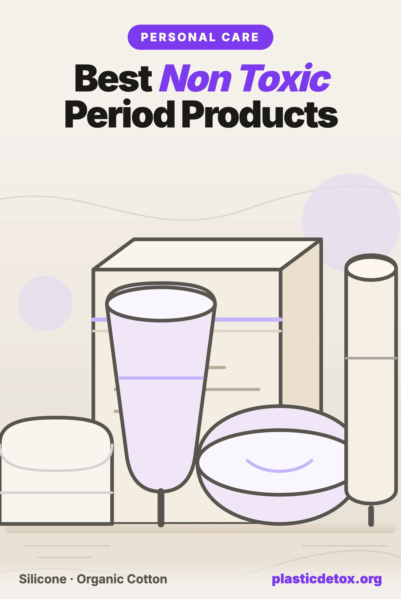

Best Non Toxic Period Products and Menstrual Cups (2026)

The 30 Second Summary
- Every tampon tested contained metals. A 2024 UC Berkeley led study found all 16 metals it screened for in all 30 tampons, including lead at a mean of 120 ng/g. Whether those metals leach into the body is still unknown, and the FDA opened its own review in September 2024.
- A third of period underwear had PFAS on purpose. A 2025 Notre Dame study of more than 70 reusable products found intentionally added fluorine in 33 percent of period underwear and 25 percent of reusable pads. Thinx and Knix have both settled PFAS class actions.
- A conventional pad is roughly 90 percent plastic, about the equivalent of four plastic bags, and it sits against some of the most absorbent tissue in the body for hours.
- Safest overall: a medical grade silicone menstrual cup or a silicone disc. One inert moulded piece, no bleaching, no fragrance, no leakproof coating.
- Best disposable: Natracare organic cotton tampons and Natracare ultra pads, both totally chlorine free with no rayon, fragrance, dye, or plastic backsheet.
- If you want underwear, buy only from a brand that publishes third party PFAS results, such as Saalt, which tested non detect for organic fluorine in independent 2023 testing.
A person who menstruates uses somewhere in the range of ten to fifteen thousand disposable period products in a lifetime. Each one sits in direct contact with tissue for hours at a time. And until very recently, almost nobody had tested what those products are made of.
The last two years changed that. Researchers found lead and arsenic in every tampon they screened. A separate team found forever chemicals deliberately added to a third of the period underwear they tested. A third group found microplastics and volatile organic compounds coming off ordinary sanitary pads. None of these studies prove harm on their own, and we are going to be careful about saying so. But together they make a strong case for a simple change, and the good news is that the safest option in this category is also the cheapest over time.
1. Why This Category Is Different
Most of the plastic exposure we write about arrives through food, water, or air. Period products are different because of where they sit.
Vaginal and vulvar tissue is thin, highly permeable, and densely supplied with blood vessels. A chemical absorbed there passes more or less directly into circulation. It does not go through the digestive tract, and it skips the first pass through the liver that partly breaks down what you swallow. That is the reason certain medications are delivered vaginally in the first place: absorption is efficient.
A 2023 review by researchers at George Mason University, which pulled together fifteen studies of menstrual products published between 2013 and 2023 across the US, Japan, and South Korea, made exactly this point. The products they reviewed contained phthalates, volatile organic compounds, parabens, environmental phenols, fragrance chemicals, and dioxins. Their concern was not the concentration in any single pad. It was that a permeable route, multiplied by hours of contact, multiplied by roughly forty years, is a meaningful exposure pathway that nobody had been measuring.
2. What Is Actually in a Pad or Tampon
Strip a conventional sanitary pad apart and you find a laminate of plastics. The topsheet against the skin is usually perforated polypropylene or polyethylene. The core is wood pulp mixed with a superabsorbent polymer, most often sodium polyacrylate. The backsheet is a polyethylene film. It is held together with hot melt adhesives, and often carries a fragrance to mask odour.
Researchers put the plastic content of a typical disposable pad at over 90 percent by weight, roughly the plastic equivalent of four carrier bags. A 2025 safety assessment of commercial pads detected polypropylene based microplastics in every product tested, alongside volatile organic compounds including toluene.
Conventional tampons are simpler but not plastic free. The absorbent core is typically a cotton and rayon blend, wrapped in a polypropylene or polyester nonwoven overwrap so it does not shed fibres. The withdrawal cord is often polyester. And most tampons sold in the US come with a plastic applicator, which is single use plastic in its purest form.
Fragrance deserves a line of its own. "Fresh scent" pads and liners carry a fragrance blend that, outside New York, does not have to be disclosed ingredient by ingredient, and fragrance mixtures are a well documented carrier of phthalates. There is no hygiene benefit to a scented pad. It is the single easiest thing in this entire article to stop buying.
3. The Heavy Metals Finding
In July 2024, a team led by researchers at UC Berkeley published the first study to measure metal concentrations in tampons. They tested 30 tampons spanning 14 brands and 18 product lines, bought in the US, UK, and Greece, and screened for 16 metals.
They found all 16 metals in every single product. The headline numbers were a mean lead concentration of 120 ng/g, cadmium at 6.74 ng/g, and arsenic at 2.56 ng/g. For scale, the lead figure is many times the limit allowed in bottled water, though the comparison is imperfect because you drink water and do not drink a tampon.
That caveat matters, and the study authors were the first to raise it. The study did not test whether any of those metals actually leach out of the cotton into the body. A metal bound in a plant fibre is not automatically a metal in your bloodstream. What the study established is that the metals are present, that nobody was checking, and that the exposure route is one where absorption would be efficient if leaching does occur. The FDA opened its own investigation in September 2024 and commissioned laboratory work to answer the leaching question directly.
One more nuance from the same dataset, because it cuts against the obvious conclusion: organic tampons averaged less lead than conventional ones, but more arsenic. Organic cotton removes the pesticide, chlorine, and synthetic fibre issues completely. It does not remove the metals, and any brand implying otherwise is overselling.
4. PFAS in Period Products
The PFAS story in this category is different from the metals story, because PFAS are not a contaminant that drifted in from the soil. In many products they were put there deliberately.
PFAS make fabric repel liquid. That is exactly the function a leakproof gusset in period underwear needs to perform. So when a 2025 University of Notre Dame team led by Graham Peaslee tested more than 70 reusable products from multiple markets, they separated incidental contamination from intentional use. About 71 percent of samples fell into the non intentionally fluorinated bucket. But 33 percent of period underwear and 25 percent of reusable pads showed intentionally added fluorine, some at levels hundreds of times above the threshold that distinguishes deliberate treatment from background contamination.
This is not theoretical. Thinx settled a class action over PFAS in its period underwear for up to $5 million in 2023, offering buybacks to customers who had bought pairs marketed as sustainable and organic. Knix settled a similar case for $1.4 million and agreed to increase its PFAS testing for two years. Independent testing by Mamavation found organic fluorine as high as 940 ppm in some Thinx styles and 373 ppm in a Knix style.
Single use products are not exempt either. Earlier testing commissioned by the Environmental Working Group detected PFAS in some pads and liners, and 2025 work found fluorine in a range of menstrual products, though most tampon cores came back low or non detect. Between the two, the reusable leakproof fabric category carries the highest PFAS risk and the tampon core carries the lowest.
5. Does Organic Cotton Solve It?
Partly, and it is worth being precise about which parts.
What certified organic cotton does fix: it removes the pesticide residues of conventional cotton, and a properly made organic product also drops the rayon, the chlorine bleaching that raised the historical dioxin concern, the synthetic overwrap, the dyes, and the fragrance. Look for a totally chlorine free process rather than the elemental chlorine free process used on most mainstream products, and for GOTS or Soil Association certification rather than the phrase "made with organic cotton" alone.
What it does not fix: the metals, as the 2024 study showed. Organic cotton also does not tell you anything about the backsheet or the adhesive, which is why a pad can be advertised with an organic cotton top layer while the rest of it is still a plastic laminate. Read for what the whole product is made of, not just the layer touching you.
6. Product Type Comparison
| Product | Material Risk | PFAS Risk | Best For |
|---|---|---|---|
| Silicone cup or disc | Inert, single piece | Lowest | Safest overall, 10 years from one purchase |
| Organic cotton tampon | Metals present, no rayon | Low | Best disposable, tampon users |
| Organic cotton pad | No plastic backsheet | Low to moderate | Best disposable pad, night use |
| Cloth pad, all cotton | Cotton only, no laminate | Low if uncoated | Reusable pad without a leakproof film |
| Period underwear | Fabric laminate | 33% intentionally treated | Only with published third party testing |
| Conventional pad or tampon | 90% plastic, fragrance | Variable | Not recommended |
7. Our Reusable Picks
The cup leads because it is the one product in this category with no absorbent fibres, no bleaching step, and no leakproof coating to fluorinate. The disc follows for anyone who finds a cup uncomfortable or wants to wear it during sex. Underwear and cloth pads round it out as backup layers rather than primary protection.

Saalt Menstrual Cup
100% medical grade silicone, single moulded piece, FDA registered, 12 hour wear, two sizes. No absorbent fibre, no bleaching, no coating. Cotton carry bag included.
View →
GladRags Day Pad Plus
100% cotton, made in the USA, plastic free construction with a removable insert. No PUL laminate or fluorinated finish, which is where PFAS turn up in reusable pads.
View →
Saalt EveryWear Cotton Brief
Cotton body with a leakproof gusset, regular absorbency, OEKO-TEX Standard 100 certified materials. Non detect for organic fluorine in independent 2023 testing, after 10 ppm in 2021.
View →
Saalt Menstrual Disc
Medical grade silicone, 12 hour wear, removal notch, sits in the vaginal fornix rather than the canal. Same inert material as the cup in a shape that suits a low cervix.
View →On cost: a cup runs about the price of three months of tampons and lasts up to ten years with boiling between cycles. It is the rare swap on this site that pays for itself several times over, which is worth saying plainly, because the up front price is what stops most people trying one.
8. Our Disposable Picks
A cup does not suit everyone, and nobody should feel obliged to abandon disposables. If you are staying with them, Natracare is the brand we keep coming back to: certified organic by the Soil Association since 1994, MADE SAFE certified, totally chlorine free, and free of rayon, fragrance, dyes, and plastic. The tampon pick leads, then the rest run from lowest to highest price.

Natracare Non Applicator Tampons
100% certified organic cotton, totally chlorine free, no rayon, fragrance, or dye. No applicator and no plastic overwrap. Biodegradable and compostable, 20 count.
View →
Natracare Ultra Pads with Wings
Organic cotton cover over an ecologically certified cellulose core, plant starch backsheet instead of polyethylene film. No superabsorbent polymer, chlorine, or fragrance, 14 count.
View →
Natracare Organic Panty Liners
Certified organic cotton with a cellulose core, long shape, 30 count. No fragrance, no plastic backing, no adhesives on the wearer side of the liner.
View →
Natracare Applicator Tampons
100% organic cotton with a biodegradable cardboard applicator and paper wrapper, regular absorbency, two pack. No plastic or bioplastic applicator.
View →A note on "plant based" applicators, which are appearing on a lot of new brands: several are made from bioplastic that has the same polymer structure as an oil based plastic and will not meaningfully biodegrade. Cardboard is the only applicator material that does what the packaging implies.
9. How to Switch Without Regretting It
Most people who give up on a cup do so in the first two cycles, and almost always for reasons that are fixable.
- Give it two full cycles. Insertion and the seal both take practice. Judging a cup on day one is like judging contact lenses on the first morning.
- Size by cervix height, not by flow. The most common cause of leaking is a cup sitting below a low cervix rather than around it. Measure with a clean finger on day two of your period, and choose a disc instead if your cervix sits low.
- Check the seal after inserting. Rotate the cup a quarter turn or run a finger around the rim. A cup that has not opened fully will leak no matter what size it is.
- Boil it between cycles, rinse during. Five minutes in boiling water at the end of each period, plain water or a mild unscented soap in between. Skip fragranced washes and antibacterial soaps, which irritate more than they help.
- Keep a backup layer at first. Organic cotton liners or a cloth pad while you learn is the difference between a confident switch and giving up. Period underwear works too, if it is a brand with published testing.
- Replace on schedule. Silicone cups last up to ten years, but replace one that has gone cloudy, sticky, tacky, or cracked. Degraded silicone will not seal properly and is harder to clean.
If a cup genuinely does not work for you, that is a normal outcome and not a failure. The ranking still holds underneath it: organic cotton tampons and pads without a plastic backsheet, no fragrance anywhere, and no leakproof fabric unless the brand publishes its PFAS results. That combination removes most of what the last two years of research turned up, and it costs about the same as what you are buying now.
10. Frequently Asked Questions
Do tampons really contain lead and arsenic?
Yes, at trace levels. A 2024 study led by UC Berkeley researchers tested 30 tampons across 14 brands and 18 product lines and detected all 16 metals it screened for in every single product, including a mean lead concentration of 120 ng/g and mean arsenic of 2.56 ng/g. The study did not measure whether those metals actually leach out of the cotton and into the body, so the health significance is still unknown. The FDA opened its own investigation in September 2024. The finding is a reason to prefer a reusable cup or disc, not a reason to panic.
Are organic cotton tampons safer?
They are better on some measures and not on others. Organic cotton tampons skip the rayon, chlorine bleaching, fragrance, dyes, and plastic overwrap of conventional tampons, which removes the dioxin and phthalate concerns. But the 2024 metals study found lead in organic tampons too. Organic ones averaged less lead than conventional and more arsenic. Organic cotton is a real improvement in materials, but it is not a heavy metal free claim, and no brand can honestly make one.
Is period underwear safe, or does it contain PFAS?
It depends entirely on the brand. A 2025 University of Notre Dame study of more than 70 reusable products found that 33 percent of period underwear and 25 percent of reusable pads showed intentionally added fluorine, meaning PFAS were used on purpose to make the fabric leakproof. Thinx settled a PFAS class action for up to $5 million in 2023 and Knix settled a similar case for $1.4 million. Buy only from a brand that publishes third party PFAS test results for the current version of the product.
What is the safest period product overall?
A medical grade silicone menstrual cup or disc. Silicone is inert, it is not bleached, it carries no fragrance or absorbent fibres, it needs no leakproof coating, and it is a single moulded piece rather than a laminate of plastic layers. In the 2025 Notre Dame study, cups were the reusable category least associated with intentional fluorination. A cup also removes the disposable stream entirely, since one cup replaces years of tampons and pads.
Why is exposure from period products treated differently to skin exposure?
Vaginal and vulvar tissue is highly permeable and richly supplied with blood vessels. Chemicals absorbed there enter circulation directly, without the first pass through the liver that partly metabolises what you swallow. That is why researchers reviewing endocrine disrupting chemicals in menstrual products treat this route as more significant than an equivalent amount on the skin, and why the product sits against that tissue for hours at a time, month after month, for decades.
Why do period products not list their ingredients?
Because federal law does not require it. The FDA regulates tampons and pads as medical devices, and medical devices have no mandatory ingredient disclosure standard the way food and cosmetics do. New York became the first state to require a full list of intentionally added ingredients on menstrual product packaging in 2021, with no trade secret exemption for fragrance. Outside that, a package can say cotton or natural without telling you what the core, the topsheet, the adhesive, or the coating is made of.
Related Articles
- Microplastics and Fertility
What the research shows about plastics, hormones, and reproductive health. - Microplastics in Cosmetics and Personal Care
The synthetic polymers hiding in everyday body and beauty products. - What Are PFAS? The Forever Chemicals Explained
Why leakproof and stain resistant finishes never break down, in the body or the environment. - How to Avoid BPA and Phthalates in Everyday Products
Where the plasticizers hide, including in undisclosed fragrance blends. - Personal Care 101
A room by room walk through the bathroom, ranked by what matters most.